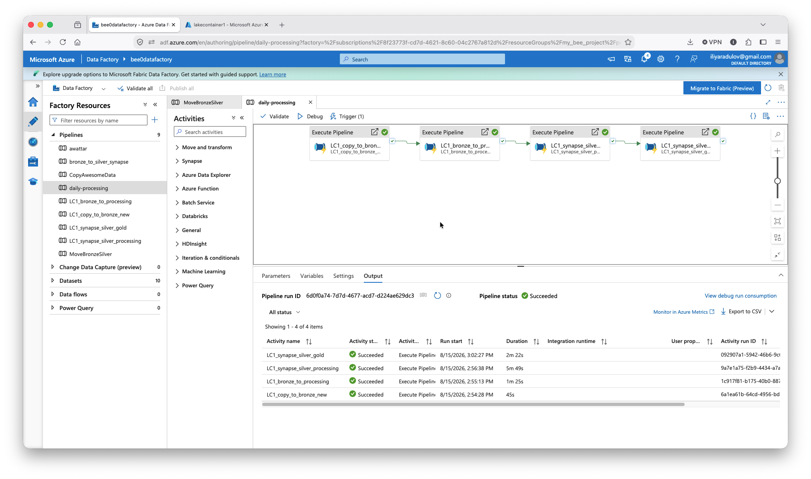

Bee Haven — Azure
A medallion pipeline (bronze → silver → gold) on Azure Data Lake Storage Gen2, built as the hands-on vehicle for DP-900 exam prep. Done, with one honestly-flagged gap.
What this is
Bee Haven is a beekeeping collective's data pipeline: hive sensor readings (flow, temperature, humidity, weight) enriched with weather data, processed through a bronze/silver/gold lakehouse pattern using Azure Data Factory for orchestration and Synapse Spark notebooks for cleaning and transformation.
Final architecture
Raw CSVs land in bronze/new/ via ADF, get copied to a pre-cleaning staging area (silver/processing/), archived with a timestamp suffix, then cleaned by a Synapse notebook into per-type Silver folders (silver/flow/, silver/weather/, etc.). A second notebook joins flow and weather data into a single Gold Parquet table, pivoting flow readings into arrival/departure columns and flooring timestamps to the hour to match weather's hourly resolution — a deliberate, documented precision tradeoff, not an oversight.
The identity saga
The one issue that stayed open for the better part of two weeks: notebooks triggered manually in Synapse Studio worked fine, but the exact same notebook triggered by an ADF pipeline failed every time with an authorization error. The root cause turned out to be structural rather than a simple misconfiguration — three separate identities are involved in this pipeline (a personal user account, the Synapse workspace's own managed identity, and Data Factory's managed identity), and each one needs its own, independently-granted Storage Blob Data Contributor role on the storage account. Granting the role to one identity does nothing for the others. Data Factory's identity specifically had never been granted the role directly, which is exactly why manual runs worked while pipeline-triggered runs didn't.
This diagnosis came from a colleague, Andreas, who sent over detailed notes identifying the exact identity-mismatch pattern after reviewing the project. Genuinely, this fix would not have been found as quickly without his help.
Closing out
Final validation, with fresh data, ran all four stages of the chain successfully end to end: copy to bronze, archive/stage, Synapse cleaning, and the Gold join — all succeeded. The daily-processing orchestrator was built as four chained Execute Pipeline activities, matching the assignment's spec.
The trigger that never fired
A scheduled trigger (DailyMidnightTrigger) was built, correctly configured, and confirmed "Started" and correctly attached to the orchestrator. It was never observed to actually fire during manual monitoring. This matches a well-documented, long-standing Azure Data Factory bug — silent non-firing, no error message, reported by the community since at least 2023, with no confirmed fix. Rather than continue debugging a known platform limitation, validation was done via manual "Debug" trigger instead, which is the accepted workaround and produced a full successful run.
Worth being precise about what this gap actually is: the trigger is correctly configured for the assignment requirement. Live automatic firing simply could not be confirmed — documented here rather than left as an unexplained hole. The exact same bug turned up again, independently, on the electricity pipeline built afterward.

Screenshot of the daily pipeline in Azure Data Factory.Where it stands
Bronze → silver → gold pipeline, including weather integration, proven working end-to-end against fresh data. Project closed out as done, with the trigger limitation explicitly documented as a known, non-project-specific constraint rather than an unresolved bug in the work itself.
📓 Full technical deep-dive: the identity saga, the rebuild, and both notebook bugs